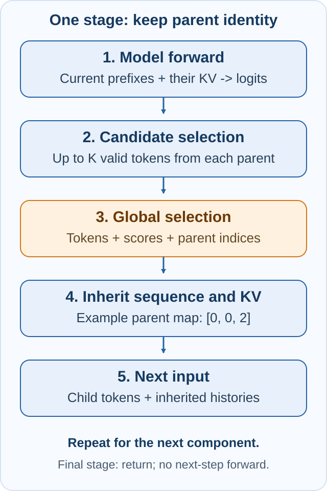

Beam Search explained¶
Beam Search keeps several possible continuations after each generated token. For recommendation, a continuation may contain semantic ID (SID) components such as A, B, and C. A catalog-constrained search accepts children that follow the supplied catalog; a full-vocabulary search has no item-membership guarantee.
This page explains the search and KV-cache relationship in the source snapshot used by these guides. Start with First offline inference, then use Beam parameters and modes for actual settings.
Follow one generation stage¶

Each non-final stage connects five operations:
- Run the model for the current prefixes and produce logits.
- Select up to
Kvalid candidate tokens for each parent. - Add each parent's cumulative score and select the winning children globally.
- Carry each winner's parent index into sequence state and KV inheritance.
- Feed the selected child tokens to the next model forward.
The arrows carry token IDs, scores, and parent identity together. Keeping only the selected token IDs is insufficient: identical tokens can extend different prefixes and therefore require different attention histories.
Separate capacity, candidate count, and returned results¶
| Symbol | Meaning | Example |
|---|---|---|
C |
Engine storage capacity, configured by beam.max_width |
128 |
w_in |
Number of parent prefixes entering this stage | 64 |
K |
Maximum candidate tokens contributed by each parent | 64 |
w_out |
Number of winning children retained after this stage | 32 |
R |
Maximum final sequences returned to the caller | 16 |
N |
Number of generated components in each fixed-budget sequence | 3 |
Capacity 128 does not mean 128 generated tokens. It bounds the supported Beam
geometry; the request's beam_width still matches the configured capacity.
A dynamic schedule changes the active retained widths within that capacity.
The candidate pool has up to w_in * K entries, including invalid slots that
cannot win. There must be enough valid continuations to fill the intended
result set; padding or invalid entries do not create valid recommendations.
R=16, N=3 means returning at most 16 sequences of three generated components.
It does not mean 16 generation steps, nor does it narrow earlier search stages.
Likewise, the demo's --print-beams changes only how many records are printed.
Local TopK and global selection do different jobs¶
For parent p and candidate token x, the ordinary cumulative score is:
Local TopK limits each parent's candidate contribution. Global selection ranks
the complete candidate pool for the request and retains w_out children.
One parent may supply multiple winners; another may supply none. A per-parent
candidate limit is not a quota that guarantees every parent a surviving child.
Final length-penalty handling is separate from this cumulative-score example.
The following small examples use retained width W=3 and K=2 to make parent identity visible. They illustrate the algorithm, not a universal NPU configuration. In this source snapshot, independent per-parent candidate counts are exposed for CUDA V1; NPU has additional candidate-width restrictions.
Two parents can produce three winning children¶
Suppose two prefixes remain, with cumulative scores P0=-1.00 and P1=-1.40:
| Parent | Candidate | Conditional log probability | Cumulative score | Global rank |
|---|---|---|---|---|
| P0 | a | -0.80 | -1.80 | 1 |
| P0 | b | -1.10 | -2.10 | 2 |
| P1 | c | -0.90 | -2.30 | 3 |
| P1 | d | -1.80 | -3.20 | 4 |
Four candidates compete for three positions. The winning children are
P0+a, P0+b, and P1+c, with parent indices [0, 0, 1].
This stage widens two parents into three children. It duplicates a parent's
history where needed; it does not reconstruct a previously discarded prefix.
Three parents still need a global competition¶
At a later stage, suppose the input scores are [-1.80, -2.10, -2.30]:
| Parent | Candidate | Conditional log probability | Cumulative score | Global rank |
|---|---|---|---|---|
| P0 | e | -0.70 | -2.50 | 1 |
| P0 | f | -0.90 | -2.70 | 2 |
| P1 | g | -2.00 | -4.10 | 5 |
| P1 | h | -2.20 | -4.30 | 6 |
| P2 | i | -0.80 | -3.10 | 3 |
| P2 | j | -1.50 | -3.80 | 4 |
Six candidates compete for three positions. The winning parent map is [0, 0, 2]: P0 contributes twice, P1 is eliminated, and P2 contributes once. Some execution paths group survivors by parent for the next forward instead of storing them in score order. Tokens, scores, sequence state, and KV must all follow the same permutation; final output ranking is a separate boundary.
Why selecting parents requires KV reordering¶
Attention reads K/V tensors representing the prefix already processed by the
model. After selecting parent map [0, 0, 2], the next history must be:
new row 0 <- old parent 0 history
new row 1 <- old parent 0 history
new row 2 <- old parent 2 history
next input tokens = [e, f, i]
Rows 0 and 1 share the same past, but their next input tokens differ. On the
next forward, those tokens create different new K/V entries. Reading the old
row-1 history for child P0+f would combine the wrong prefix with the selected
token and could change logits, scores, and later recommendations.
The prompt's paged KV can remain shared. The generated suffix's per-Beam KV must inherit the selected parent across every attention layer. A gather needs safe staging when source and destination overlap or a parent appears twice; an unsafe in-place overwrite can destroy history another child still needs.
KV reordering still happens where required. Its implementation depends on the execution path; do not identify the algorithm with one operator name:
| Path in this source snapshot | How parent KV inheritance is implemented |
|---|---|
| NPU native fixed-width decision | The eligible xllm path calls select_unshared_kv after non-final selection; a dispatcher provides the fallback. |
| Dynamic stage-width state | reorder_stage_kv gathers the selected parents into persistent pools for the target width, including repeated parents. |
| CUDA persistent V1 runner | Dedicated gather/scatter kernels apply the selected parent mapping. |
The NPU native operator's grouped-parent, full-width assumptions must hold. Passing a new logical width to an old physical pool is not a substitute for correct pool strides. Dynamic execution maintains width-specific contiguous pools and their lifetimes. On the final selection, there is no next attention forward, so the NPU fixed/dynamic paths skip that next-step KV reorder.
Narrowing and widening with capacity 128¶
Keep beam.max_width=128 and request beam_width=128. For a three-component
SID, the retained-width schedules below express different searches:
| Schedule | After A | After B | After C | Decode input widths |
|---|---|---|---|---|
| Fixed | 128 | 128 | 128 | 128, 128 |
| Narrowing | 128 | 64 | 32 | 128, 64 |
| Widening | 32 | 64 | 128 | 32, 64 |
Narrowing keeps fewer parents for later forwards. Widening branches from the parents that survived earlier selection; it cannot recover pruned prefixes. Both can change search results and recommendation quality relative to a fixed schedule. A larger final width does not make earlier pruning reversible.
These are examples within the three-step contract of this snapshot, not a claim that every device, width, candidate count, or longer schedule works. Use the parameter reference for platform restrictions and matching graph configuration, and check models and capabilities before changing modes.
Prefill, Decode, and graphs¶
For three effective generated components, final prompt logits select A during Prefill. Decode 1 processes A to select B; Decode 2 processes B to select C. This V1 path requires Chunked Prefill to be disabled. The complete remaining prompt must fit the Prefill budget; the first generated component is selected from its final prompt logits.
Begin/end markers affect the public token budget. With both markers configured,
max_tokens=5 reserves two positions and produces three searched components.
See step counting.
Graph execution replays work against stable buffers and compatible shapes. It does not change the intended candidate scoring, global selection, parent identity, or KV inheritance rules. Capture coverage is path-specific: a Beam Forward graph does not imply that the LM head, TopK, and KV reorder are all inside that same graph. Prefill capture is configured separately from Decode.
For NPU, the graph key includes logical batch size and Decode input width. The widening example needs widths 32 and 64 for its two Decode forwards; the final retained width 128 has no following forward. Verify actual replay rather than inferring it from a graph flag. Different kernels can have floating-point differences, so intended mathematical equivalence still needs numerical checks. Use validation and benchmarking to compare tokens, scores, rankings, graph replay, and latency under matching inputs and settings.
Read the implementation¶
The links below pin the source revision used by this explanation:
- Request parameters and supported budgets
- Dynamic global selection and width-specific KV pools
- NPU native decision and same-step reorder
- KV reorder dispatch and native layout requirements
- CUDA persistent decision and KV kernels
- Beam Forward capture and replay
For errors, graph fallbacks, and unexpected output, continue with Troubleshooting.